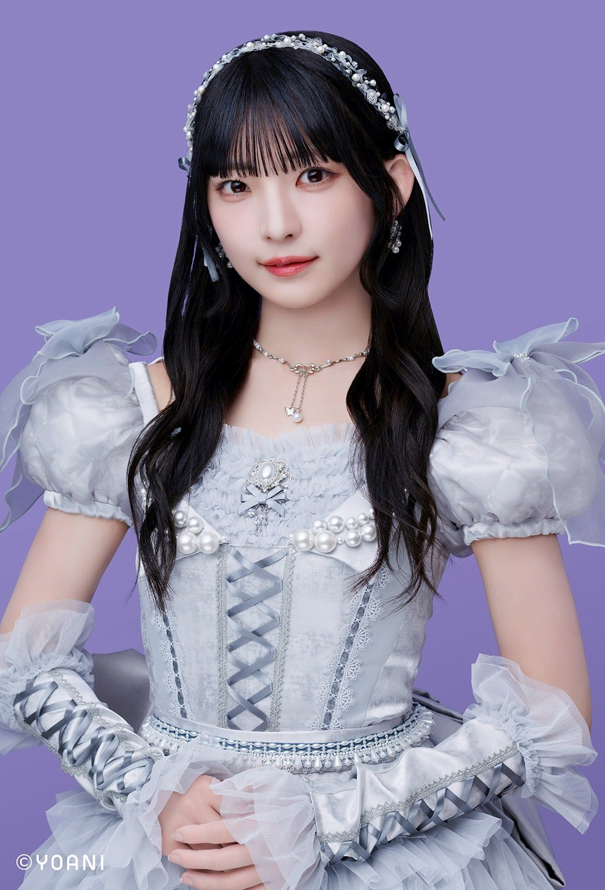

プロフィール
このサイトは≠MEの永田詩央里（しおりん）ちゃんを応援するファンサイトです。しおりんのおすすめや情報をまとめてお届けします。
ラジオ
しおりんが出演するラジオ番組やおすすめ放送回をまとめます。
本
しおりんが紹介した本やお気に入りの書籍を紹介します。
音楽
おすすめの楽曲やお気に入りアーティストなど。
映画・ドラマ
しおりんが好きな映画やドラマのリスト。
グルメ
しおりんおすすめの食べ物やお店情報。
メイク
愛用しているコスメやメイクのコツ。
ファッション
しおりんのファッションスタイルやブランド。
キャラクター
好きなキャラクターやコラボ情報。
イベント
参加したイベントやライブ情報。
舞台・ミュージカル
出演舞台や観劇レポート。
ブログ・ネット
しおりんのブログ記事やSNSリンク。
場所・スポット
しおりんが訪れた場所やおすすめスポット。
パーソン
しおりんが影響を受けた人物や仲の良いメンバー。
アイテム
愛用アイテムやグッズ。
メンバーの呼び方
しおりんやほかメンバーのニックネーム。
文房具
おすすめの文房具や使いやすいアイテム。
パーソナルデータ
生年月日、出身地、血液型などの基本情報。
広島
しおりんの地元、広島に関する情報。